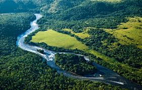

Localizado na região Sul do Brasil,o Paraná é um estado rico em biodiversidade, apresentando uma variedade de ecossistemas que abrigam diversas espécies nativas. Com uma extensão territorial significativa, o estado possui uma geografia diversificada, que vai desde áreas de planalto até regiões de planície, proporcionando diferentes condições ambientais para o desenvolvimento da fauna e flora.
A Mata Atlântica, um dos biomas mais ameaçados do país, marca presença no Paraná, especialmente em suas porções mais próximas à costa. Essa vegetação exuberante abriga uma gama impressionante de espécies endêmicas, ou seja, que só são encontradas nessa região. Entre as espécies nativas, destacam-se árvores como a araucária, o pinheiro-brasileiro, que é símbolo do estado, e uma variedade de bromélias, orquídeas e outras plantas características desse bioma.
Além da Mata Atlântica, o Paraná também apresenta ecossistemas de cerrado e campos naturais, que abrigam diferentes espécies adaptadas a condições específicas de clima e solo. A diversidade de aves é notável, com a presença de várias espécies coloridas, como tucanos, araras e beija-flores. Mamíferos como a onça-parda, o lobo-guará e o mico-leão-da-cara-dourada também encontram seu habitat no estado.
Os rios que cortam o Paraná, como o Paraná, Iguaçu e Paranapanema, são fundamentais para a manutenção da vida selvagem. A ictiofauna é rica e diversificada, com a presença de peixes como o dourado, surubim, pintado e cascudo. Além disso, a região é conhecida pelas Cataratas do Iguaçu, uma das maravilhas naturais do mundo, que abriga uma variedade única de espécies aquáticas e terrestres em seu entorno.
Infelizmente, apesar da riqueza natural, muitas espécies nativas do Paraná estão ameaçadas de extinção devido à degradação do habitat, desmatamento e outras atividades humanas. A preservação ambiental torna-se, portanto, essencial para garantir a sobrevivência e a saúde dos ecossistemas do estado, promovendo o equilíbrio e a sustentabilidade para as gerações presentes e futuras.